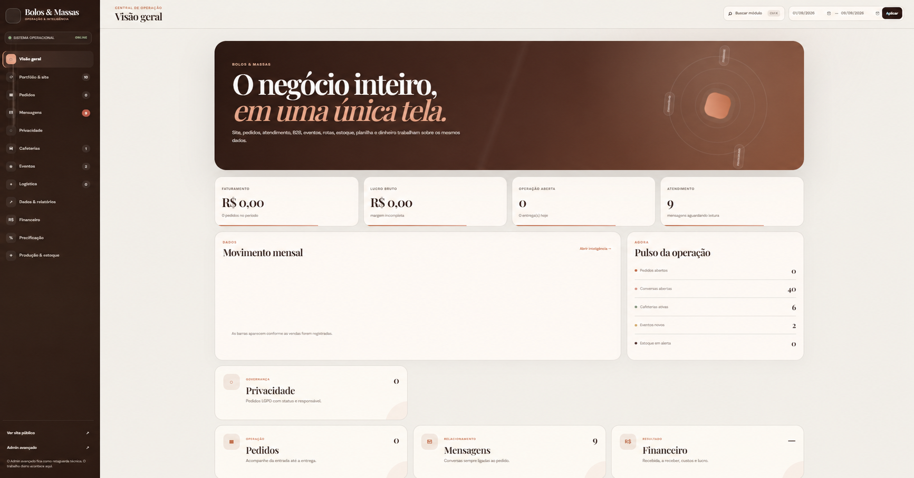
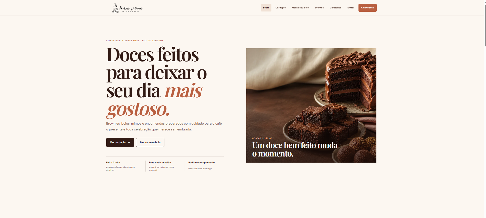
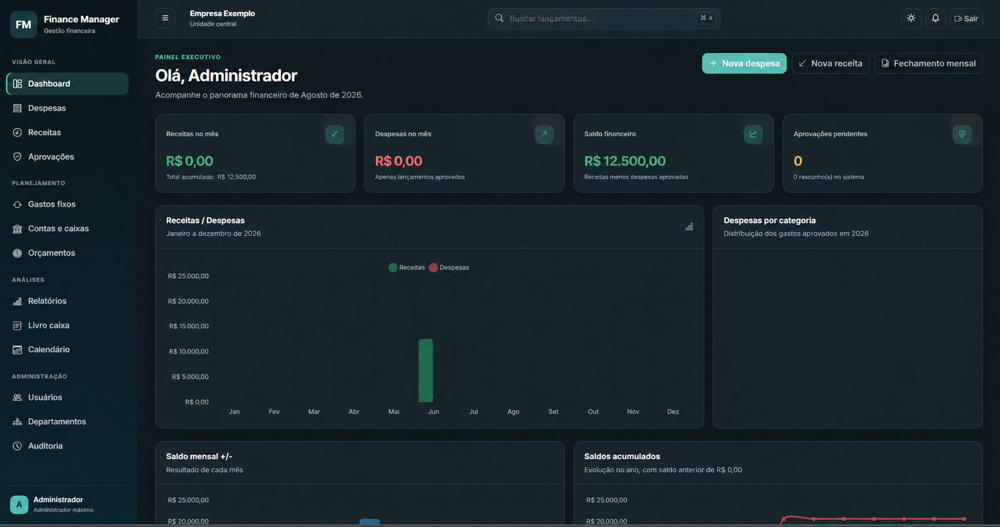
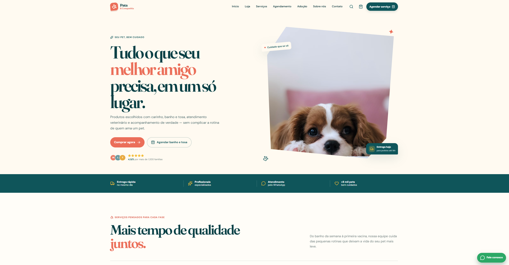

Referência visualClientFlow
Agenda, clientes, serviços e orçamentos reunidos em um protótipo de interface.
Explore nosso trabalho
Interfaces, sistemas e soluções de dados. Cada projeto apresenta o que foi construído e seu estágio atual.

Referência visualAgenda, clientes, serviços e orçamentos reunidos em um protótipo de interface.
Python · FastAPI · Pandas
Qualidade de dados, anomalias, segmentos e previsões em um fluxo de análise explicável.

Catálogo, pedidos, montagem de bolos e operação interna em uma plataforma Django.
Python · FastAPI · SQLAlchemy
Previsão e simulação de restrições na geração renovável, com premissas explícitas.
TypeScript · Next.js · React
Administração, professores e alunos em um MVP de gestão e acompanhamento de treinos.

Imagem anonimizadaModelagem de receitas, despesas, contas e permissões em uma base Django genérica.
Excel · Fórmulas · Python
Uma planilha integrada de insumos, receitas, precificação e análise comercial.
Python · Pandas · Streamlit
CSV, indicadores, filtros e relatórios em um dashboard de análise de vendas.

Proposta de experiência institucional para cafeteria, com cardápio pesquisável.

Loja, carrinho e agendamento demonstrativos em uma experiência responsiva.
Em desenvolvimento
Java e Spring Boot. Acompanhe o próximo projeto.
Acesse os repositórios da seleção.
Agenda, clientes, serviços e orçamentos reunidos em um protótipo de interface.
Protótipo frontendQualidade de dados, anomalias, segmentos e previsões em um fluxo de análise explicável.
Demo de portfólioCatálogo, pedidos, montagem de bolos e operação interna em uma plataforma Django.
Em evoluçãoPrevisão e simulação de restrições na geração renovável, com premissas explícitas.
Demo sintéticaAdministração, professores e alunos em um MVP de gestão e acompanhamento de treinos.
MVP em branchModelagem de receitas, despesas, contas e permissões em uma base Django genérica.
Edição pública reduzidaUma planilha integrada de insumos, receitas, precificação e análise comercial.
Demo em ExcelCSV, indicadores, filtros e relatórios em um dashboard de análise de vendas.
Demo de análiseProposta de experiência institucional para cafeteria, com cardápio pesquisável.
Proposta de siteLoja, carrinho e agendamento demonstrativos em uma experiência responsiva.
MVP de interfaceProjeto em Java e Spring Boot, com nova versão em preparação.
Em desenvolvimentoEsta seleção prioriza produtos com interface, regras de negócio, integração, automação ou análise de dados documentadas. Exercícios de cursos, forks e práticas introdutórias ficaram fora do portfólio comercial.
O SICMA aparece separadamente como projeto em desenvolvimento. O estágio de cada case acompanha sua apresentação; capturas adaptadas ou anonimizadas são identificadas nas páginas dos projetos.
Vamos conversar
Conte o que você precisa. O escopo a gente constrói junto.